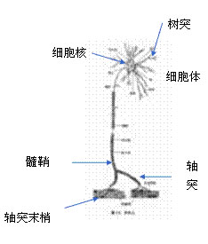
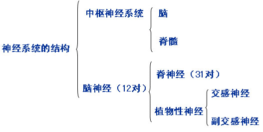
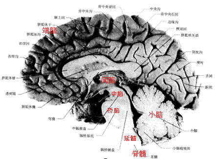
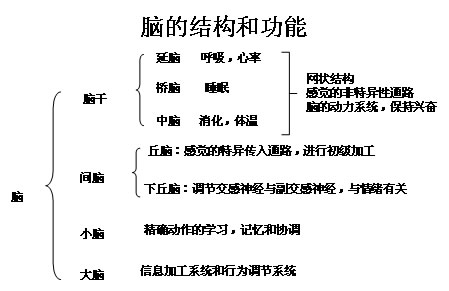
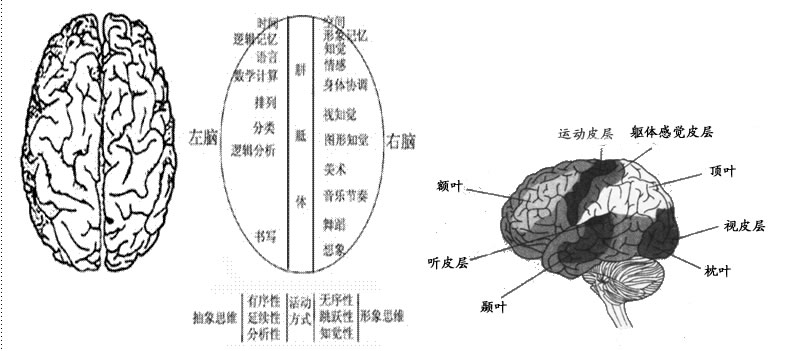
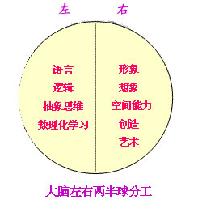

00:00
第二节 心理活动的生理基础
第一单元 神经系统的构造及功能
一、神经元及功能

- 神经元是神经系统的基本结构单位和功能单位。神经元由细胞体、树突和轴突三部分组成。
- 2.神经元具有接受刺激（信息）、传递信息和整合信息的功能。
- 3.神经元分为感觉神经元（传入神经元）、运动神经元（传出神经元）和中间神经元三种。
08:49
二、外周神经系统及其功能

中枢神经系统及其功能

10:34
神经系统就是由遍布全身的神经组成的。外周神经系统是联系感觉输入和运动输出的神经机构，它包括由脑神经和脊神经组成的躯体神经系统及自主神经系统。
- 脑神经有12对
- 脊神经有31对
- 大量的神经细胞集中的地方称作神经中枢。中枢神经系统包括脊髓和大脑。
- 脊髓：
- 脑干
- 间脑
- 小脑

17:11
四、大脑皮层的结构与功能
- 1.额叶以语言和思维为主
- 2.颞叶以听觉功能为主
- 3.视觉中枢位于枕叶的枕顶叶
- 4.中央后回是躯体感觉中枢
- 5.中央前回是躯体运动中枢

26:34
五、大脑两半球功能的不对称性
1.大脑两半球的解剖结构基本上是对称的，但其功能又是不对称的，这种功能的不对称性叫做“单侧化”。
2.20世纪60年代，美国神经心理学家罗杰斯佩里（Spery,R.W.)做了“割裂脑”的实验。这一实验结果进一步证明，对于右利手的人来说，他的左半球言语功能占优势，右半球空间知觉和形象思维占优势。

29:50
第二单元 内分泌系统与心理
一、垂体腺：位于丘脑下部，受丘脑控制，由垂体前叶和垂体后叶组成。垂体后叶：控制泌尿、血压，并影响着分娩及乳汁的分泌。垂体前叶：直接影响着生长的速度和生长持续的时间，并影响其它腺体的活动
1.主腺（Master gland）: 控制其他腺体的功能
2.分泌多种激素：
（1）生长激素（巨人、侏儒）
（2）性腺激素（精子或卵细胞的成熟）
（3）抗利尿激素、分娩和乳汁分泌
二、肾上腺：位于肾脏的上部，由肾上腺皮质和肾上腺髓质两个腺体组成
1.肾脏顶端
2.肾上腺皮质：分泌葡萄糖皮质素、矿物质皮质素及雄性激素。维持平衡
3.肾上腺髓质：分泌肾上腺素和去甲肾上腺素，使交感神经兴奋
三、甲状腺：促进机体代谢
1.分泌甲状腺素
2.促进细胞的氧化作用，增进新陈代谢
3.心境（昏睡、懒散和抑郁）
36:30
四、性腺
1睾丸：分泌睾丸激素，刺激精子的产生
2.卵巢：分泌雌性激素和孕激素，分别控制排卵、怀孕和月经周期。
3.促进第二性症的发育